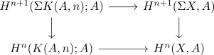

brown representability map and suspension
Proposition
Let $X$ be a topological space Then for the
\begin{displaymath}
\begin{tikzcd}
[\Sigma X, K(A,n+1)] \arrow[]{r}{} \arrow[]{d}{}& H^{n+1}(\Sigma X,A) \arrow[]{d}{}\\
[X, K(A,n)] \arrow[]{r}{}& H^n(X,A) \\
\end{tikzcd}
\end{displaymath}Proof
by naturality of the suspension isomorphism of singular cohomology

Then